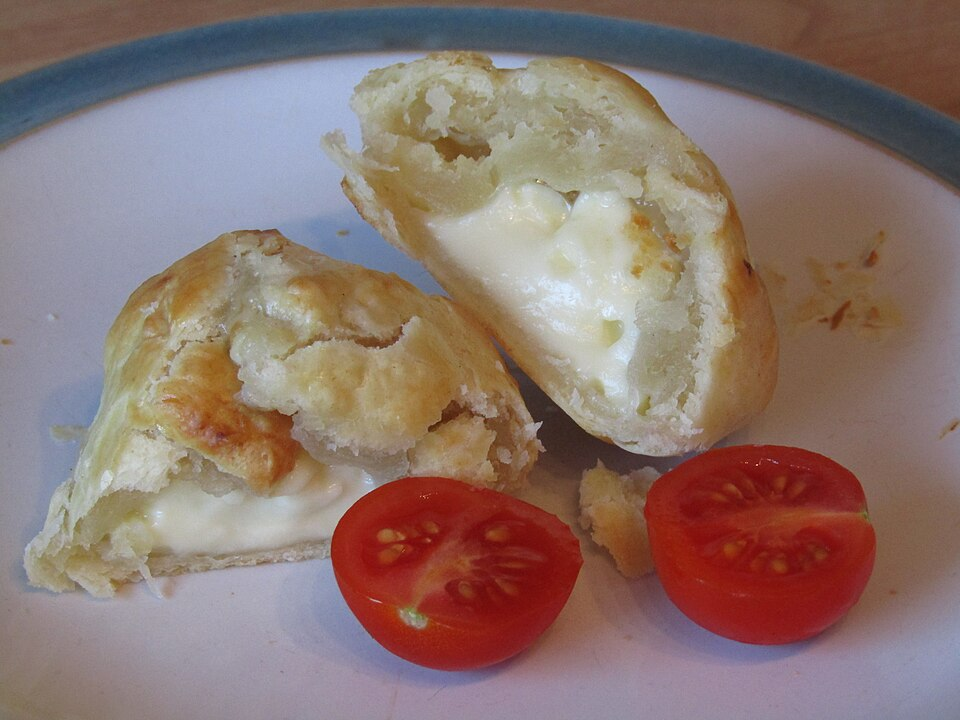

Tortas salgadas
Torta folhada de queijo

Ingredientes
- 3 xícaras (chá) de sobras de arroz
- 100 g de mussarela ralada
- 1 linguiça-calabresa defumada
- 300 g de massa folhada laminada congelada
- 2 colheres (sopa) de farinha de rosca
- Manjericão para decorar
Modo de preparo
- Processe o arroz até pasta; junte mussarela e metade da calabresa picada.
- Em forma 25 cm de aro removível, forre fundo e laterais com a massa; polvilhe farinha de rosca; despeje o recheio; decore com rodelas de calabresa. Gele 20 min e asse em forno médio ~40 min. Decore com manjericão (opcional: amarre com ráfia).
Observação
Boa opção de lanche; pode ser feita na véspera.